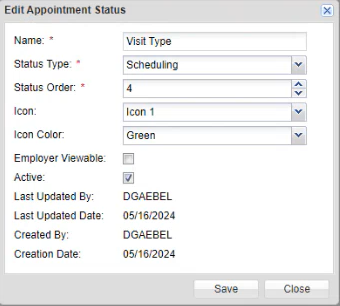

Adding a New Appointment Status Indicator Icon to an Existing Appointment Status
To Add a new Appointment Status Indicator icon to an existing Appointment Status:
Click the Client Admin tab.
On the left navigational panel, click Appointment Status. The Appointment Status window appears to the right.
On the Appointment Status window, click the Edit icon of an Appointment Status without an Appointment status icon. The Edit Appointment Status window appears.

In the Icon dropdown textbox, select one of five icon options available.
In the Icon Color dropdown textbox, select one of seven color options available for the icon. If an Icon Color is not selected, a warning icon displays to the left of the Icon Color dropdown textbox indicating information is missing.